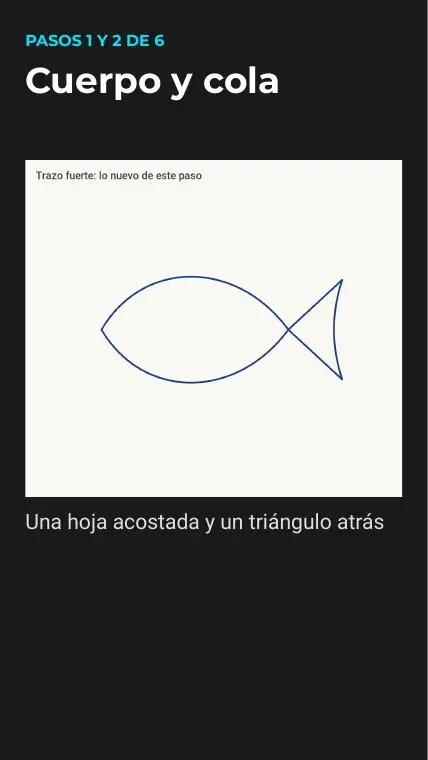
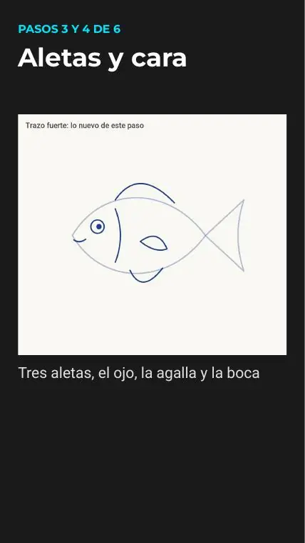
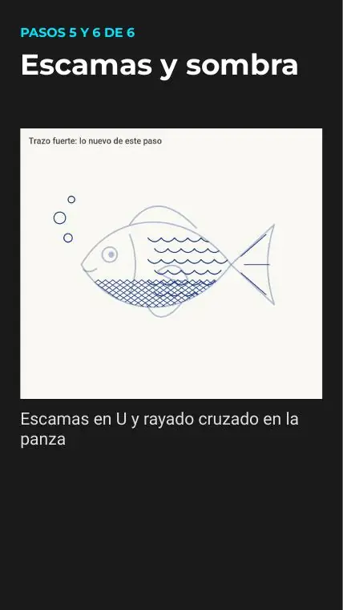

Tutoriales › Cómo dibujar un pez con birome

Tutorial 04 · Short programado
Cómo dibujar un pez con birome
Dibujo paso a paso con 3 bloques de pasos explicados abajo. Mirá el video, descargá las diapositivas en PDF (6 páginas) y practicá a tu ritmo.
Video
Estreno: 27/10/2026 · 12:00 (GMT-3)
Materiales
- Una birome azul común y una hoja lisa. Nada más.
Paso a paso

Pasos 1 y 2 de 6 · Cuerpo y cola
Una hoja acostada y un triángulo atrás

Pasos 3 y 4 de 6 · Aletas y cara
Tres aletas, el ojo, la agalla y la boca

Pasos 5 y 6 de 6 · Escamas y sombra
Escamas en U y rayado cruzado en la panza
Consejos
- Bocetá suave primero: las líneas de guía se borran al final.
- Si algo no sale, pausá el video o volvé a la diapositiva del PDF.
- Practicá el dibujo dos o tres veces: la segunda siempre sale mejor.
Las imágenes de los pasos son páginas del PDF del tutorial (material propio del canal). Licencia: uso personal libre; no reventa.